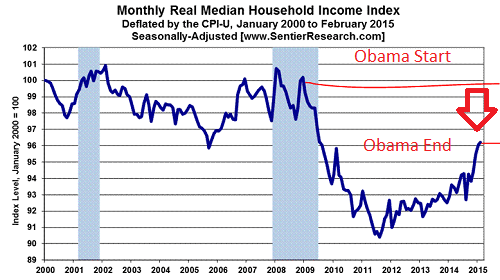
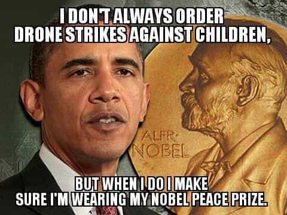

is an aspiring philosopher king, living the dream, travelling the world, hoarding FRNs and ignoring Americunts. He is a European at heart, lover of Latinas, and currently residing in the USA.


President Obama gave his farewell address in Chicago on January 10, 2016. President Trump took office 10 days later. The following are a few quotes from President Obama’s 50 minute speech:
If I had told you 8 years ago that America would reverse a great recession, reboot our auto industry, and unleash the longest stretch of job creation in our history… and secure the right to health insurance to another 20 million of our fellow citizens, if I had told you that, you might have said our sights were set a little too high. But that’s what we did.
So, no one could have even *IMAGINED* a better health care answer than requiring millions to purchase overpriced and often practically useless high deductible policies from private for profit corporations? No one could imagine a system better than the one Mitt Romney and the Heritage Foundation created? We couldn’t even “set our sights” at something higher?
You didn’t land on the moon for the first time. You told people they had to send Blue Cross $3,500 in premiums every year, and let some 26-year-olds, who are mostly young and healthy, continue to receive the benefits of their parents’ health policy. There are a lot of dissenting voices against the ACA even being a positive change, but to call it the best we could have even dreamed of is laughable.
Because of you, by almost every measure, America is a better place than when we started.
While it is possible to look at some misleading government data like the U3 unemployment rate or the nominal price of stock exchange indices, (unadjusted for the rampant $40 billion monthly Federal Reserve injections and money creation), real wages for Americans are down from 2009, when Obama took office. The data shows real incomes are around 4% lower than they were in 2009. Which means one could purchase 4% fewer goods and services. Far from improving, we have a ways to go before we reach the levels of the 1990s.

There are some statistics that show some economic improvement. But even if “the economy” churns out widgets at a rate higher than it did when you took office, that measures only economics. How is the nation morally?
Record drone strikes, presidential extrajudicial kill lists, and continuation of torture, which had been wiped out as a mechanism of the state throughout every modern nation on the planet prior to 2000, all continued or increased.
What about the failing family? More single virginal Americans living with their parents than ever before? The majority of marriages failing? The fact that America has a teen birth rate over double that of Canada’s, and 10 times that of some western European nations?

What about the increasing political correctness, the demagoguery of traditional sex roles and the attacks on masculinity? Frankly I don’t care if my nation’s GDP is 2% higher next year. In fact, I’m strongly considering making the decision that Roosh and many others have, to leave this land for a country with a much lower GDP, but better values, feminine women, and better quality of life.
America has continued to slip morally, and this is even more disturbing than the economic crisis we currently face.
“Our democracy won’t work without a sense that everyone has economic opportunity… wages, incomes, and retirement accounts are rising again. Poverty is falling again.”
Concerning wages, real wages are down (see above). Most working age people have economic opportunity. I may have more opportunity than others, because I have good genes, high IQ, chose to pursue college degrees, and made mostly good life decisions, including not knocking up or marrying women, saving a large portion of my income, and working steadily since my high school years.
Of course, we want to encourage those types of behaviors in society, so we should support a system that gives greater opportunities to those who make better decisions. But there is opportunity for all–there are plenty of entry level jobs that give people the opportunity to start from the same place I did.
“Health care costs are rising at the slowest rate in 50 years.”
Someone at the Medicare/Medicaid office didn’t get the memo
Health care costs may be slowing (the above chart appears to show otherwise), but health insurance costs are up as much as 100% in a single year, and the IRS forces you to pay for a policy. If the claim of declining costs is true, it’s only because many people cannot afford to see the doctor under Obamacare. The typical health insurance plan that taxpayers are forced to buy under Obamacare, has a $6,000+ premium, which means even though they are paying thousands of dollars a year for an insurance policy, it offers zero benefit unless you have a serious medical issue which costs more than around $10,000.
Doctor visits are still expensive, and the sick are likely choosing to forego doctor visits for non-emergency care, thus driving down the total “cost” of health care–doctors and hospitals receive less money because people can’t afford to visit them unless the case is urgent. But that doesn’t mean we are healthier as a nation.
Most health insurance plans only benefit a sick person with over $10,000 in annual health expenses
“If anyone can put together a plan that is demonstrably better than the improvements we’ve made to our health care system, that covers more people at less cost, I will publicly support it.
So expect an endorsement of Trump’s health care plan by Obama shortly. While there is a lack of brainpower in Congress, and most representatives are bought and paid for, it’s not hard for even a typical citizen to imagine a plan that could work better than the current system.
“For white Americans, it means acknowledging that the effects of slavery and Jim Crow didn’t just disappear in the 60s.”
So when will they disappear? If citizens are given equal protection under the law, and have economic opportunity, then at what point does the treatment of their ancestors cease to affect them? I had some powerful and wealthy ancestors over 100 years ago, and can tell you any benefit from wealth, property, or even name recognition from them disappeared far before my parents were born.
If one examines immigrants, typically the language, culture, and customs of their home nation are all but gone by the third generation.
A poor day laborer can begin digging ditches today and in 40 years his grandchildren will be as assimilated and Americanized as anyone else. This is why many such as myself aren’t even interested in foreign women unless they were born abroad—if raised in the west, they forget their traditional ways and rapidly adopt the mannerisms, speech, body fat, and feminism of the culture.
Women’s suffrage has been around only 100 years, and we are already facing fourth wave feminism. Look at the collective power that women hold in society, the economy, and politics today and reflect that they accomplished all that in only 100 years. Israel, with all its power and wealth, was established in 1948, and many of its founders escaped not slavery but forced evacuation of their homes and narrowly escaped death. And yet the ancient practice by less than 2% of Americans who owned slaves in the early 1800s is still a factor for modern blacks?
Israel built a desert land into one of the most powerful modern nations on the planet in less than 50 years. Women now control over 80% of household spending, and wield enormous political influence, just 100 years after gaining the right to vote, despite living in a violent raping land of microaggressions and triggering green frogs. How long will it take American blacks to overcome slavery, when only 5% of slaves were sent to America, slave importation was ended over 200 years ago, and all American slaves freed 150 years ago?
“We have taken out tens of thousands of terrorists… Coalition against ISIL has taken away about half their territory”
This group, with a dubious history, didn’t even exist when Obama took office. So until you take away all their territory, we’re in a worse position than 8 years ago. Or by another metric, you created tens of thousands of enemies which were so violent and dangerous you had to kill them. How many more enemies are you leaving for the next administration to deal with?
“Protecting our way of life is not just the job of the military.”
This is is spot on. The threat to America will not be from an invading army; indeed America has never faced a serious threat from war in its history since 1812. The problems with America cannot be solved by military troops; I’d argue they can only be exacerbated by more aggression and war. Instead, all our degeneracy and destruction is coming from within. And no organized force is fighting it.
“If the scope of freedom and respect for the rule of law shrinks around the world, the likelihood of war within and between nations increases. And our own freedoms will eventually be threatened.
Freedoms for Americans both at home and abroad are far less than they were 15 years ago. This is mostly due to our own governments restricting our rights and imposing additional laws and rules.
“Rivals like Russia or China cannot match our influence around the world, unless we give up what we stand for, and turn ourselves into just a big country that bullies smaller neighbors”
Why must Russia and China be rivals or enemies? My personal view of Russia is that it is a European state with bright scientists, engineers, and a long history in art, music, and ballet, which is seeing a masculine and Christian revival. My personal view of China is that it is a great place to buy lots of things cheaply.
If they are enemies or rivals, it is because politicians make them so. While there are some cultural differences between the west and Asia, the constant verbal badgering of China will only embolden them to battle the west economically, and perhaps one day militarily. By contrast, Trump sees Russia as a strong leader and potential ally, and while being critical of some trade policies, “loves China.”
As to the second point, what is America to the world if not a big country that bullies others? If America cared about the well being of its neighbors, perhaps it could assist in structural change with nearby Haiti, one of the poorest nations in the world. Instead, it runs multiple wars on far flung nations, determined to overthrow their political and social order and bring them a “democracy” they don’t want, and then is surprised when the result of the popular vote is a Muslim ethnostate.
If America cared about strengthening its image and influence, why doesn’t it help end the Syrian civil war, which is sending “refugees” all over Europe, causing multiple mass murders of peaceful European citizens, threatening the very future of these countries as peaceful, independent states? Instead, America came very close to going to war for the radical rebels in Syria that are the root of this problem.
The end of his speech was good, and he encourages people to not sit back and rely on politicians to fix problems, but to confront them ourselves.
“Not just when there’s an election, not just when your interest is at stake… If you disagree with someone on the internet, try talking with them. If something needs fixing, then lace up your shoes… “
Good advice, especially for the manosphere, as Trump is not going to solve all our problems. I’ll be impressed if he can just stop things from further declining.
To all the party hacks, remember that criticism of someone who is a Democrat is not support of Republicans. I find distasteful things in some of Trump’s speeches, and hope his feet are held to the fire, especially on civil liberties issues. But he will be a fresh change in many areas. Our best hopes?
January 20th started a new era. Here’s to new beginnings!
Read More: How The Washington DC Swamp Is Still A Threat To Donald Trump